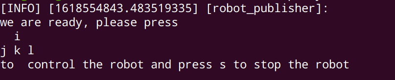

import sys import rclpy from rclpy.node import Node from geometry_msgs.msg import Twist import tty, termios
classRobotPublisher(Node):
def__init__(self): super().__init__('robot_publisher') self.publisher_ = self.create_publisher(Twist, 'cmd_vel', 10) self.key_map = { "i": (-1.0, 0.0), "k": (1.0, 0.0), "j": (0.0, -1.0), "l": (0.0, 1.0), "s": (0.0, 0.0) } self._logger.info(""" we are ready, please press i j k l to control the robot and press s to stop the robot """) self.pub_vel_from_keyboard()
# Destroy the node explicitly # (optional - otherwise it will be done automatically # when the garbage collector destroys the node object) minimal_publisher.destroy_node() rclpy.shutdown()
mport sys import rclpy from rclpy.node import Node from geometry_msgs.msg import Twist import tty, termios
classRobotPublisher(Node):
def__init__(self): super().__init__('robot_publisher') self.publisher_ = self.create_publisher(Twist, 'cmd_vel', 10) self.key_map = { "i": (-1.0, 0.0), "k": (1.0, 0.0), "j": (0.0, -1.0), "l": (0.0, 1.0), "s": (0.0, 0.0) } self._logger.info(""" we are ready, please press i j k l to control the robot and key s to stop the robot """) self.pub_vel_from_keyboard()
# Destroy the node explicitly # (optional - otherwise it will be done automatically # when the garbage collector destroys the node object) minimal_publisher.destroy_node() rclpy.shutdown()
if __name__ == '__main__': main()
编译
1 2
cd ~/dev_ws colcon build --packages-select teleop_key_control --symlink-install
这里选择单独编译这个包，--symlink-install表示在之后改变代码的时候，无需再一次编译
运行节点
1
ros2 run teleop_key_control teleop_key_control
出现如下信息则说明，程序已经准备完毕

此时按下i,j,k.l，在终端会返回
1 2 3 4 5 6 7 8 9 10 11 12 13 14 15
[INFO] [1618554843.483519335] [robot_publisher]: we are ready, please press i j k l to control the robot and press s to stop the robot [INFO] [1618554948.329805806] [robot_publisher]: publish x:0.0， z:-1.0 [INFO] [1618554948.736472114] [robot_publisher]: publish x:1.0， z:0.0 [INFO] [1618554949.951230725] [robot_publisher]: publish x:0.0， z:1.0 [INFO] [1618554950.393064298] [robot_publisher]: publish x:1.0， z:0.0 [INFO] [1618554950.823001403] [robot_publisher]: publish x:0.0， z:1.0 [INFO] [1618554952.271946683] [robot_publisher]: publish x:0.0， z:-1.0 [INFO] [1618554952.609704862] [robot_publisher]: publish x:0.0， z:1.0 [INFO] [1618554952.957432100] [robot_publisher]: publish x:-1.0， z:0.0 [INFO] [1618554957.612637394] [robot_publisher]: publish x:0.0， z:0.0